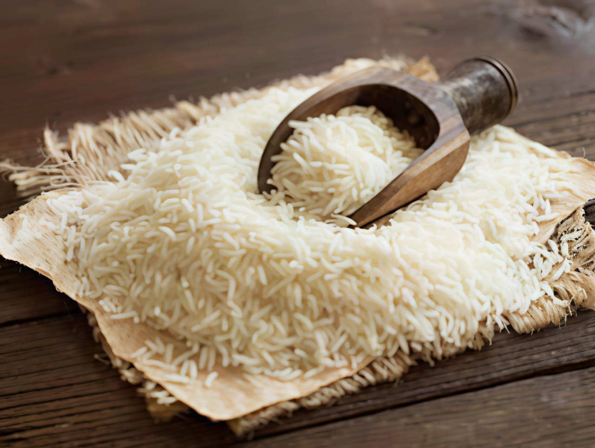
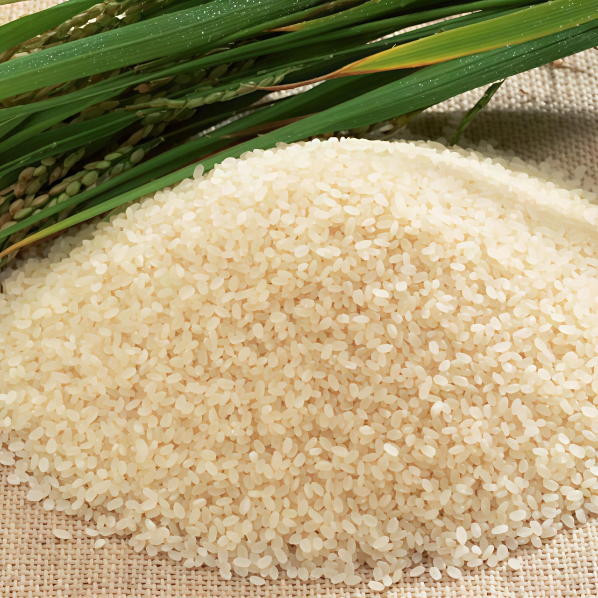
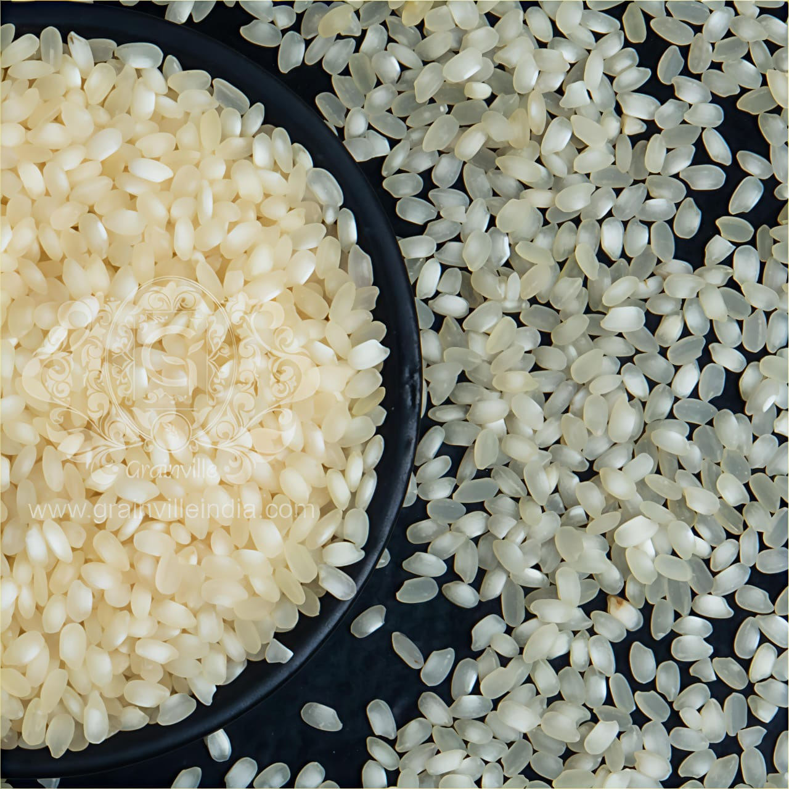
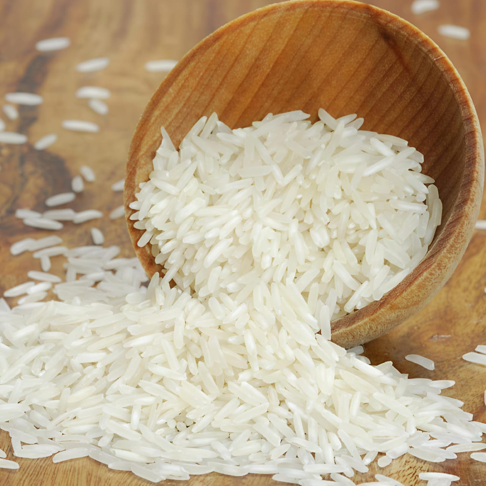

Type: Traditional / Export Variety
Where grown: Punjab, Haryana, Uttar Pradesh, parts of Tamil Nadu
About: Long-grain, slender, aromatic rice.

Type: Traditional / Local
Where grown: Tamil Nadu (Thanjavur, Trichy, Salem)
About: Small, round, fine-grain rice with unique aroma.

Type: Local / Open Pollinated
Where grown: Tamil Nadu, Karnataka
About: Medium-grain parboiled rice, soft after cooking.

Type: Hybrid (IR varieties like IR-20, IR-36)
Where grown: Tamil Nadu, Andhra Pradesh, Karnataka
About: Short, round, bullet-shaped grains.